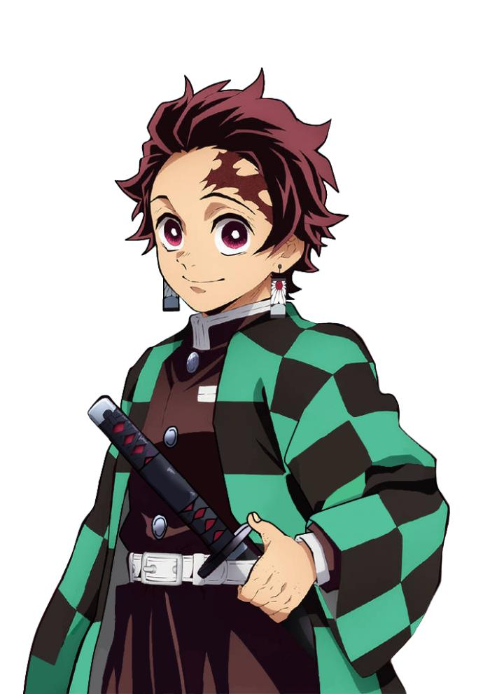
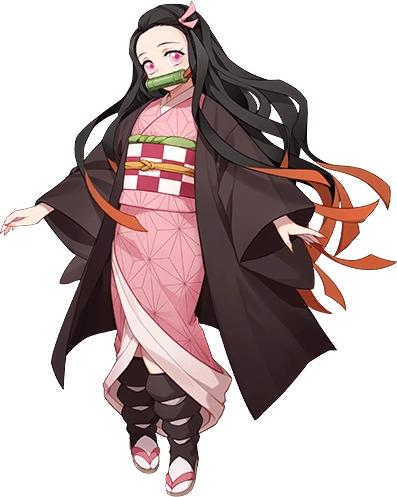
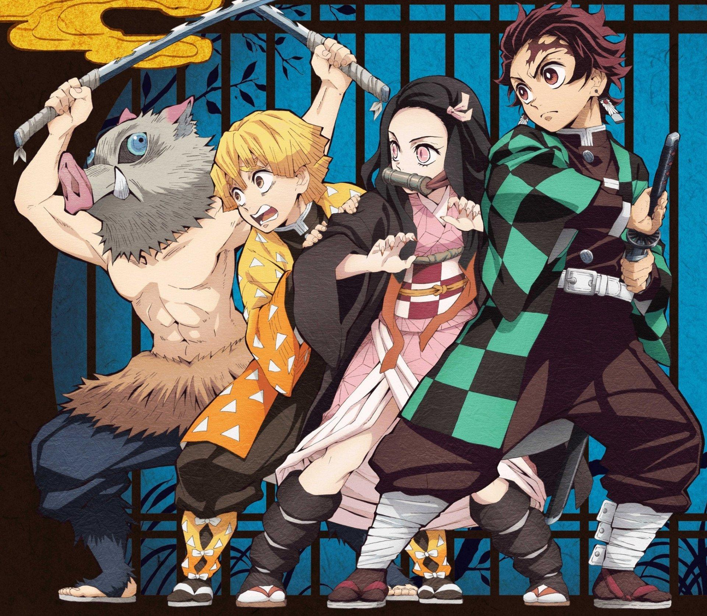

About Demon Slayer
Demon Slayer: Kimetsu no Yaiba is a Japanese anime and manga series created by Koyoharu Gotouge. The story follows Tanjiro Kamado, a kind-hearted boy whose family is attacked by demons. His sister Nezuko survives but becomes a demon. Tanjiro then begins his journey to become a Demon Slayer and find a way to turn Nezuko back into a human.
The series is known for its emotional story, memorable characters, intense battles, and beautiful animation.
Main Characters
- Tanjiro Kamado – The main protagonist who becomes a Demon Slayer.
- Nezuko Kamado – Tanjiro's younger sister who is transformed into a demon.
- Zenitsu Agatsuma – A Demon Slayer who uses Thunder Breathing.
- Inosuke Hashibira – A wild and energetic Demon Slayer who uses Beast Breathing.
- Giyu Tomioka – The Water Hashira and one of the most powerful Demon Slayers.
Demon Slayer Characters



Why I Like Demon Slayer
Demon Slayer is interesting because it combines action, adventure, friendship, family, and emotional moments. The characters have different personalities and fighting styles, which makes the story enjoyable to watch.
The animation and fight sequences are also some of the most memorable aspects of the series.
Learn More
You can learn more about Demon Slayer from its Wikipedia page .